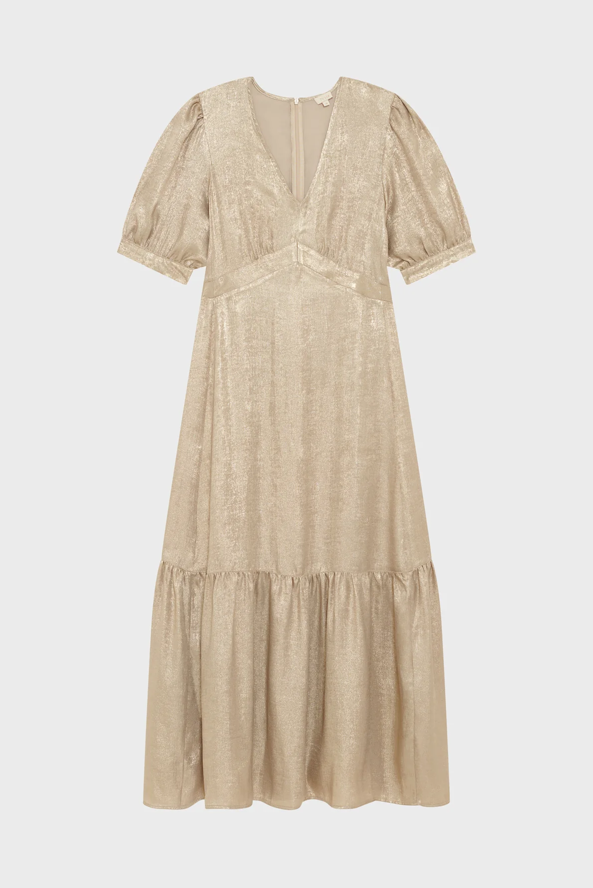

2 ans et demi dans les camps (robe)
Description :
De septembre 1942 à mai 1945, Frieda survit dans les camps, elle reconnait avoir eu une chance inouïe.

“ Une citation choc de Frieda Thau dans son interview par l'INA „
Description :
De septembre 1942 à mai 1945, Frieda survit dans les camps, elle reconnait avoir eu une chance inouïe.
